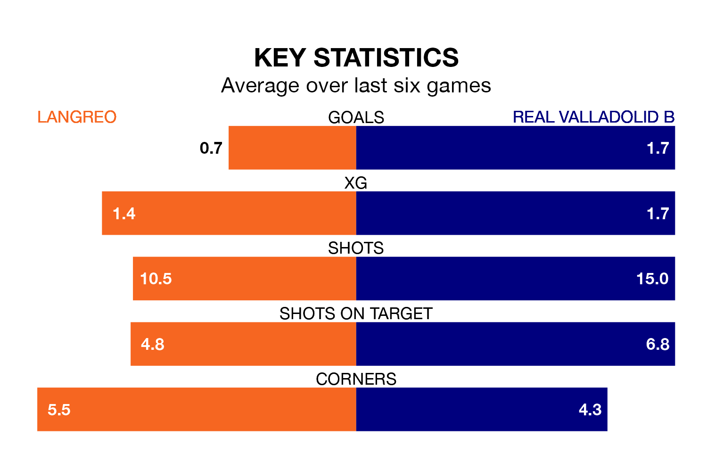

Langreo face Real Valladolid B on Sunday seeking to protect their long unbeaten run in the Segunda División RFEF Group 1.
Langreo are unbeaten in five, with three wins and two draws, ahead of the 4pm kick-off.
They face a Valladolid B team who have won one and drawn two over the same number of games.
With 29 goals in 31 games so far this season, Langreo are scoring at below the league average rate with 0.9 goals per game. And they are conceding more than average, letting in 36 goals at a rate of 1.2 per game.
Valladolid B, meanwhile, are above average scorers, with 1.2 goals per game, compared to a league average of 1.1. They have conceded 1.6 goals per game.
In the last 10 years, Langreo and Valladolid B have played each other on seven occasions. Langreo won one of them, Valladolid B three, and they drew three times.
On average, Langreo scored 1.3 goals and Valladolid B 1.6 in those matches.
Their last meeting was on December 10, when Valladolid B won 2-1 at home.
The hosts are fifth in the table after 31 games, of which they have won 11 and drawn 13, earning 46 points.
The away team are five places behind Langreo in 10th, with 10 wins and eight draws putting them on 38 points.
Langreo's last match was on April 14, a 1-0 win against Gimnástica Torrelavega.
Valladolid B drew 1-1 with Zamora CF last time out, also on Sunday, with Manuel Pozo Guerrero on the scoresheet.
Updated: 15:40 (UTC), 18/04/24